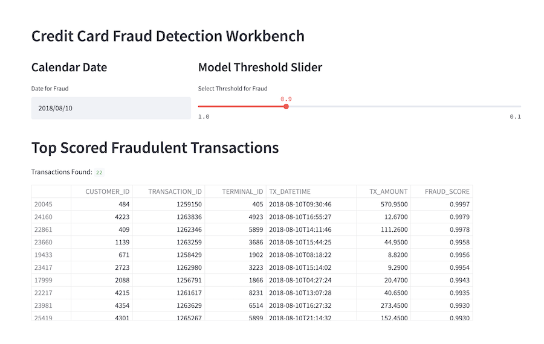
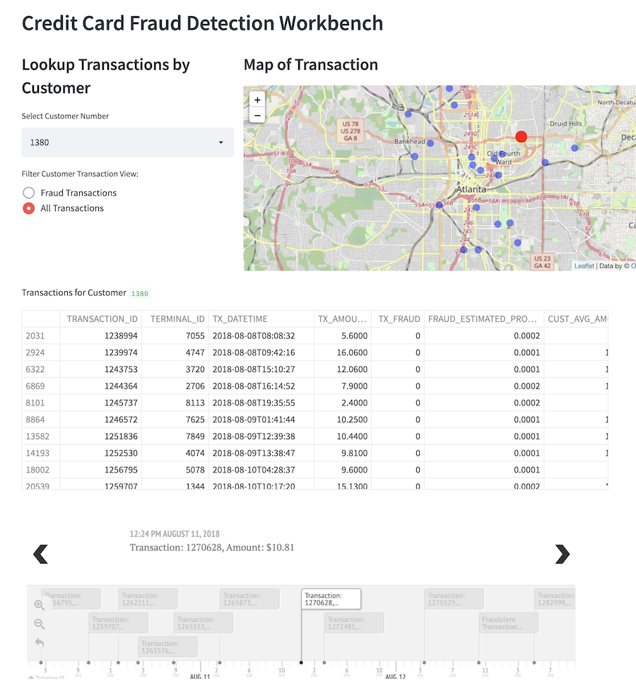
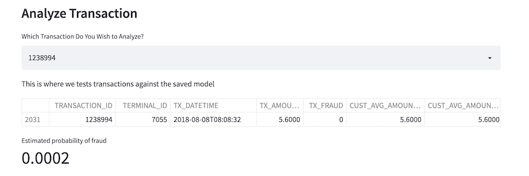
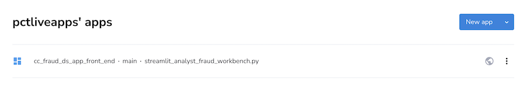
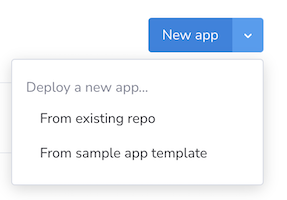
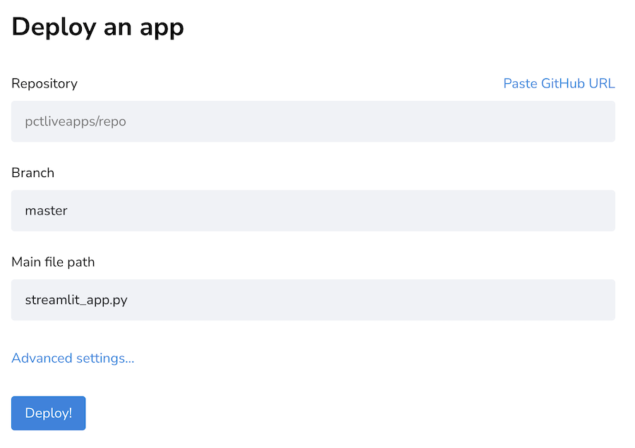

Detecting Credit Card Fraud with Snowflake, Snowpark, and Amazon SageMaker Studio Lab
Part 5 of 5: Deploying the Model as a Streamlit Application
Author: Josh Patterson
Date: zzzzzzz xxth, 2022
Other entries in this series:
- Part 1: Loading the Credit Card Transaction Data Into Snowflake
- Part 2: Scalable Feature Engineering with Snowpark
- Part 3: Connecting Amazon SageMaker Studio Lab to Snowflake
- Part 4: Grid Search Model Selection with Amazon SageMaker Studio Lab and Shap Hypertune
- Part 5: Deploying the Model as a Streamlit Application
Introduction
In the last post in this series we introduced Amazon SageMaker Studio Lab and then connected it to Snowflake inside a notebook. We also did some further feature creation with the data from Snowflake inside the Jupyter notebook.
In this this post in the series we'll cover the following topics:
- What is Streamlit?
- Building a Streamlit Application
- Integrating our Preditive PMML Model
- Deploying the Streamlit Application to the Cloud
Let's start out by learning about the streamlit framework.
What is Streamlit?
Streamlit is an easy way to use python to build analytic and data science applications. You dont have to know front end web dev, just basic python concepts.
Streamlit also offers a great way to easily deploy data science apps to the cloud from github with streamlit cloud.
What Do I Use Streamlit For?
Data science mostly exists in the world of R, Python, and Jupyter notebooks. This begs the question:
"Why Use Streamlit Over Jupyter Notebooks to Display Data Science Results?"
Jupyter Notebooks:
- primarily useful to engineers who want to develop software and visualizations
- data scientists use Jupyter Notebooks to develop code and share it with other engineers/data scientists
- combined with add-ons, Jupyter notebooks can be similar to Streamlit, but its not notebooks' main goal
Streamlit:
- full data dashboarding solution
- Engineers use Streamlit to build dashboards for non-technical users
- can easily deploy a single stand-alone applicaiton to the cloud
Now that we've established streamlit's role in the developer ecosystem, let's look at how to build a basic streamlit application.
Building a Streamlit Application
To build a streamlit application we need to do a few things:
- install streamlit locally to develop against
- get the basic UI elements of our system working
- wire in our data elements via streamlit bindings for pandas dataframes
- integrate our pmml model
- deploy to the cloud
Installing Streamlit
Installing streamlit locally is simple, just use pip install (or your favorite environment management tool):
pip install streamlit
Just like that, were ready to fire up the text editor and start writing some python code for streamlit.
Writing Streamlit Applications
Once we have our text editor or IDE up and rolling, we can import streamlit to get going:
import streamlit as st
Once we have our environment ready, we can take a quick look at the core concepts in streamlit.
Once you are comfortable with those concepts, take a look the the basic steps to build a streamlit application.
The nice thing displayed in these basic concepts is that you realize that you don't have worry about writing backend code, handle HTTP requests, or writing javascript. It really is all just python code.
Streamlit Applications Automatically Update as Your Change Code
The application in the web browser will automatically update as you iteratively change the source code. Makes for a nice way to quickly prototype applications.
Building Our End-User Credit Card Fraud Application
We want to build an application that allows an end-user to use the model we created in this series. This application should be point and click and not require the end-user to have any knowledge about data science, pandas, nor machine learning workflows.
Profiling the End-User
Our model is for fraud detection in credit card transacitons and the end-user is an analyst at the bank who is not part of IT, but uses software provided by IT. They will access this application from their web browser.
End-User Workflow
Each day the analyst needs to find the top 20-30 cases per day of fraud to analyze and potentially promote for further analysis. They need a way to quickly see those top cases per day and then drill down into a specific customer account to see if they can manually discover any other patterns that may help them with their job.
Defining Key Information to Show
We need to provide the analyst with:
- A list of the highest scored fraudulent transactions for a given date
- A list of all transactions for a given customer
- The fraud probability for a given transaction
Mapping Data to the UI
One of the core concepts in data science applications is working with Pandas dataframes. Our applications many times will need to display a dataframe, and this is easy with streamlit as we can see below.
data = pd.read_csv( "/path/file.csv" )
st.write(data)
In the example above we're passing in a dataframe and it's rendering as an interactive table. This is a great example of how streamlit just takes care of things for us such as writing a dataframe to a an interactive html table.
In data science python applications we often use dataframes as the input to machine learning models or as the output for machine learning models. Being able to easily display dataframes is a huge help.
The other data component of our application is our PMML model. Later on in this article we'll see how to load PMML models and display the output to the user interface with streamlit.
For now, let's dig into the major panels of information we want to provide to our end-user analyst.
Panel 1: "Fraud Case Search"
One of our stated goals is to get a list of transactions that are scored to be most likely fraudulent for a specific date. Most of the time we'd want to see "today", but some analysts might want to go back and take a look at previous dates as well.
Given that each transaction has an associated fraud rating, we also want to be able to quickly filter down the list of transaction records. To do this, we'll use a slider component, as we see below.
Snazzy looking user interface, huh? This actually was not a lot (under 25 lines) of code in streamlit, as we can see below:
def renderMainAppBody_Top20Fraud():
with top_filter_select_col:
st.subheader("Calendar Date")
current_date_select = st.date_input("Date for Fraud", value=current_date)
with top_map_col:
st.subheader("Model Threshold Slider")
fraud_threshold = st.select_slider('Select Threshold for Fraud', value=0.9, options=[1.0, 0.975, 0.95, 0.9, 0.8, 0.7, 0.6, 0.5, 0.4, 0.3, 0.2, 0.1])
with mid_container_col:
st.header("Top Scored Fraudulent Transactions")
cols_to_show_top20 = ["CUSTOMER_ID", "TRANSACTION_ID", "TERMINAL_ID", "TX_DATETIME", "TX_AMOUNT", "FRAUD_SCORE"]
df_rows_found = df_transactions[ (df_transactions["TX_DATETIME"].dt.date == current_date_select) & (df_transactions["FRAUD_SCORE"] >= fraud_threshold) ][cols_to_show_top20].sort_values(by=['FRAUD_SCORE'], ascending=False)
rows_found = len(df_rows_found.index)
st.write('Transactions Found:', rows_found)
st.dataframe(df_rows_found)
We'll come back to seeing the full application in action in a moment, for now let's move on and take a look at how to build the "customer analysis" panel.
Panel 2: "Customer Analysis"
Once we know what transactions have been flagged for a given date, we may want to dig into the customers who have fraud or the locations of the terminals where the fraud was committed.
In the image below we can see the user interface panel that shows the list of all transactions for a given customer. The user interface also includes an interactive map component showing where each transaction occured, along with a component that gives a visual timeline for each customer's transactions.
This panel gives the analyst to lookup any specific customer to get a better sense of how and where fraud was being committed in a time and space sense.
Finally, we have one last component on this apge where we can lookup a specific transaction and examine its fraud score as calculated by the pmml model, but also we can look at every attribute for the given record.
The streamlit python code for the customer analysis panel is similar to the previous panel, but it is longer due to the folium mapping code logic. For the sake of page space, we're not going to list all of it here but you can check it out on github.
Let's now take a look at the code to see how we integrated the PMML model from part 4 of this series.
Integrating Our Predictive PMML Model
We saved our model as PMML so that it (in theory) portable across platforms. Here we use pypmml to load the model and reinstantiate the saved model from our grid search efforts in part 4 of this series (also: github link).
First we make our python imports:
from pypmml import Model
Once we have our imports, we can reference a pmml file and load it locally:
full_model_path = "./models/xgb_cc_fraud_20220405_v2.pmml"
xgb_cc_fraud_pmml_pipeline = Model.load(full_model_path)
# now score all records
input_features = ['TERMINAL_ID_RISK_30DAY_WINDOW', 'CUST_AVG_AMOUNT_1', 'CUST_AVG_AMOUNT_30', 'TX_AMOUNT', 'TERMINAL_ID_RISK_1DAY_WINDOW', 'CUST_CNT_TX_30', 'CUST_CNT_TX_7', 'TERMINAL_ID_NB_TX_30DAY_WINDOW', 'CUST_AVG_AMOUNT_7', 'TERMINAL_ID_NB_TX_7DAY_WINDOW', 'CUST_CNT_TX_1', 'TX_DURING_WEEKEND', 'TERMINAL_ID_RISK_7DAY_WINDOW', 'TX_DURING_NIGHT']
Once we load the model with pypmml we're using a similar but slightly different model api to the one we had in our notebook. We can see the code below where we work with the pypmml.Model api to get our fraud predictions for a single transaction:
probs = xgb_cc_fraud_pmml_pipeline.predict( df_view_txns[ input_features ] )
prediction_est_prob = probs.iloc[:, 1]
df_view_txns["FRAUD_ESTIMATED_PROBABILITY"] = prediction_est_prob.values
st.dataframe(df_view_txns[["TRANSACTION_ID", "TERMINAL_ID", "TX_DATETIME", "TX_AMOUNT", "TX_FRAUD", "FRAUD_ESTIMATED_PROBABILITY", "CUST_AVG_AMOUNT_1", "CUST_AVG_AMOUNT_7", "CUST_AVG_AMOUNT_30"]])
As we can see above, at the end once we have the results of the estimated probability of fraud for a transaction, we can easily display the results with a streamlit st.dataframe() or st.write() call.
Notes on Model Integration
In the case of this application we have a model embedded with the application. Normally we'd want to consider situations where we dynamically deploy new models and that leads up to think about putting the model behind an api endpoint, etc. These concepts are important yet beyond the scope of focus for this article, but we always like to call them out.
Deploying the Streamlit Application to the Cloud
Many times the "last mile" part of software and dev ops will stall and kill a promising data product.
If we never get the results of our data science work into the hands of end-users, we cannot impact the line of business.
Streamlit offers a (free/paid) cloud deployment platform that let's you deploy any streamlit app directly from github.
With streamlit when you are developing locally and you save the code, the streamlit app running locally will update. The streamlit cloud deployment has a similar dynamic in that when you push code to the linked github repository, the app will re-deploy itself and pick up the changes.
This means application deployment becomes:
git push ...
Streamlit cloud also supports the following security features:
- SSO
- Credential Storage
- Permissions and Role-Based Access Control
Apps can be deployed for free from public github accounts and you can deploy an unlimited number of public applications.
We note that when you sign up for a streamlit cloud account you'll need to link a github account at the same time.
Deploying Our End-User Credit Card Application to Streamlit Cloud
Once you've signed up for a free account and you've logged into streamlit cloud, you'll see a main app dashboard as seen in the image below.
To deploy our streamlit app (once we've pushed it to github) we click on the "New App" button as shown in the image below.
If we choose "From existing repo", we are shown the application configuration screen as shown below.
From there, configure which repository we're going to use for this application and the main file path, and hit "Deploy!". Your streamlit application will be live in a matter of seconds.

Streamlit Wants Access to Everything in Github
I'd say an important caveat with the current way Community Edition Streamlit Cloud connects to a github repository is that in wants "full access to private repository". We ended up creating a separate github account to protect certain private repositories that we couldn't expose to third-parties for this demo (the Streamlit team explains their rationale here).
Try Out the Application
You can clone our github repository and run the application yourself if you'd like to try it locally.
https://github.com/pattersonconsulting/cc_fraud_demo/tree/main/streamlit_app
We'll see how to deploy this application to streamlit cloud in a moment, but you can also try the application out now via this link to our live deployment.
Series Conclusion
In this series we started with some raw transaction data and took the reader through a series of scalable, deployable, and reasonable steps to build a real-world end-user data application.
We hope you enjoyed the series. Questions? Comments? Want to share data jokes? Please say hello.
Looking for Streamlit Help?
Our team can help -- we help companies with Streamlit, Snowflake platform operations, analytics, and machine learning.